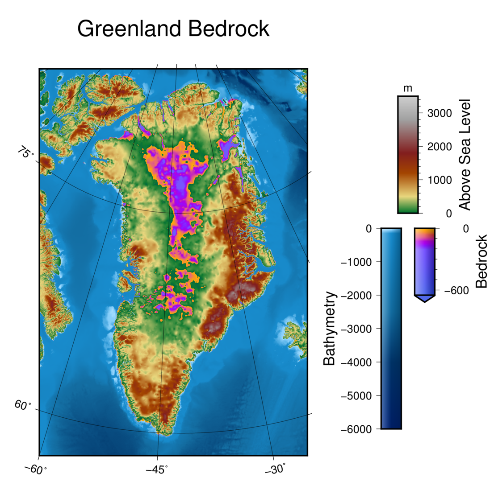
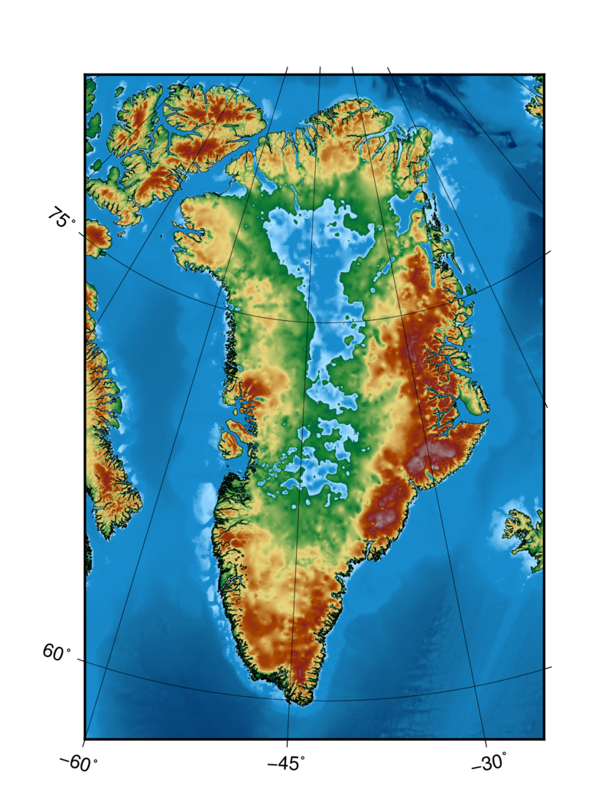
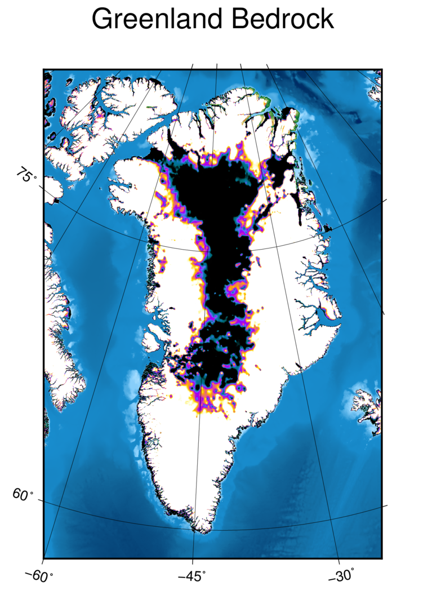
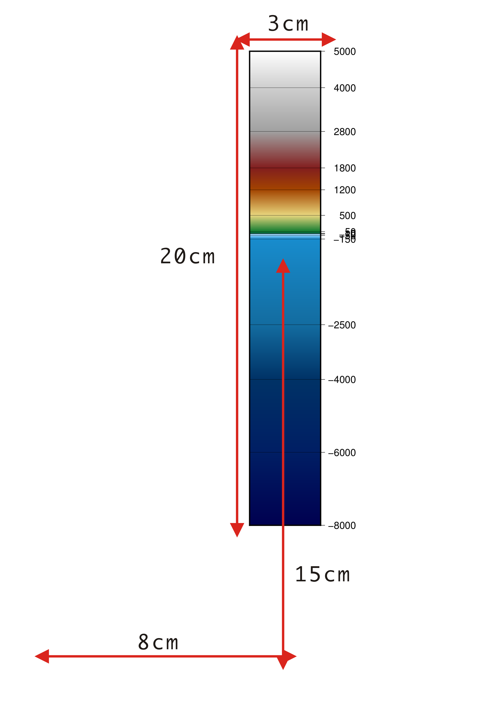
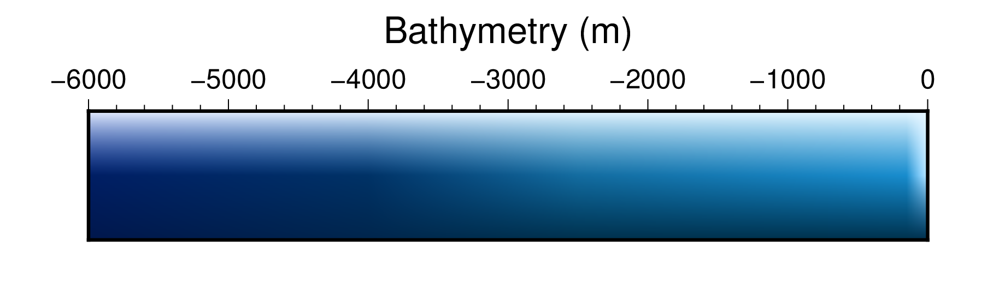

色階檔的編修與呈現
Contents
14. 色階檔的編修與呈現#
在本章中，我們要深入的探討如何為資料量身打造最適合的色階檔。GMT 具有一些編修指令，讓我們不用在文字編輯器中編輯色階檔，但也能針對輸入的資料進行調整。另外，本章也會說明如何繪製色條 (Color Bar)，把色階一併畫到地圖上，讓地圖使用者能直接依靠地圖顯示的顏色來判定數值。
14.1. 目標#
製作一張格陵蘭的基盤地形圖。格陵蘭大部分的土地都落在北極圈內，氣候寒冷，內陸地區長年被極厚的積雪與冰層覆蓋。這些厚冰層的重量實際上已經把格陵蘭的中心陸地壓陷了。在底下的地圖中，可以看出格陵蘭的「陸地」表面呈現外高內低的趨勢，內陸地區甚至已經達海平面之下數百公尺。為了與周圍水域區隔，我們要使用不同的色階來表示「被壓陷到海平面以下的陸地」與「海域地形」。
{kind=link}
直接觀看指令稿
14.2. 使用的指令與概念#
grd2cpt- 使用網格檔的資訊建立色階檔psscale- 繪製色階條makecpt- 編修色階檔pscoast- 沿著海岸線裁剪地圖grdinfo- 查閱網格檔的基本資訊grdimage- 繪製著色影像GMT 共用選項：
-V-B--長參數色階檔的編修技巧
沿著海岸線剪掉影像
色階條的繪製與細節調整
14.3. 前置作業#
本章同樣使用 ETOPO Bedrock 資料庫來繪製海底地形。有關 ETOPO 的詳細說明，請參閱「為地形圖上色」。檔案可以在 ETOPO 的網站下載 (ETOPO1 Bedrock -> grid-registered: netCDF)，或是使用如下快速連結下載：
下載 ETOPO1 Bedrock netCDF 檔 (383M，解壓後約 891M)
本次的作圖區域有大半部份落在極圈內，如以下 Google Earth 截圖所示。在高緯度地區，-R 的作用方式會不太一樣，將於下段與圖片一同解說，但基本的 -R 參數概念，仍然可以參考「製作第一張地圖」。
另外，本教學還使用了兩個 cpt-city 的色階檔，分別為 mby 和 cequal。你可以從cpt-city 網頁上下載，或是直接從以下連結取得：
{kind=link}
14.4. 操作流程#
我們先來畫畫看比較一般的地圖。由於格陵蘭地處高緯，使用麥卡托投影 (-JM) 會使此地區變形嚴重，因此我們繼續使用之前介紹的 Albers 投影
(-JB)，使格陵蘭與其他地表的相對面積與實際大小一致。
# ==== 設定變數 ====
in_grd='ETOPO1_Bed_g_gmt4.grd'
out_ps='greenland.ps'
cpt_sea='mby.cpt'
# ==== 繪製地形圖 ====
grdimage $in_grd -R-60/57/20/80r -JB-42/76/90/60/4i -K -P -C$cpt_sea \
-Ba15g15 -BWSne > $out_ps
pscoast -R -J -O -Dh -W,black >> $out_ps
以上腳本出圖如下
{kind=link}
值得注意的是，-R座標r 的語法規範的地圖左下角和右上角的經緯度為 (-60, 57) 和
(20, 80)，但因為地圖本身投影位置在高緯度的因素，實際顯示在地圖上的並不會是沿著 60W、20E、57N 和 80N 四條經緯線圍起來的範圍，例如地圖左上角的緯度大概已是 80W 了。事實上，如果上例中的 -R 參數改成 -R-60/20/57/80，地圖會根本無法產生。
注意
在以上所述的情況下，grdimage 還是可以執行成功，但嘗試開啟 .ps 檔時會出現如下錯誤：
undefined -21
undefined -21
undefined -21
undefined -21
然後圖檔就會是一片空白。因此，在使用 -R座標 的語法時，請一定要確認地圖 (四條經緯線圍成的區域) 在選定的投影法下可以適當的投影，或是改使用 -R座標r 的語法，比較不會出現這類型的錯誤。
格陵蘭島在上一幅地圖中，很明顯地中間下凹了一塊。地圖使用海水的顏色標示所有低於海平面的高度，在一般的狀況中沒有問題，但是如果我們想表達中間那塊是「下凹至海平面以下的陸地」而不是海底地形的話，顏色就勢必要更改才行。要達成目標並不困難，只要「海洋使用一個色階檔著色，陸地部份則使用另一個色階檔著色」就行了。這時候，我們需要的是 pscoast 中一個特別的選項 -G。-G 一般的用法是在後面填上顏色來指定陸域的填色，不過它還有另一個功能，就是當語法為 -Gc 時，GMT 不會為陸域填色，而是會沿著海岸線把陸地部份的地圖剪掉。在下了 pscoast -Gc 之後，我們要再使用 grdimage 畫一次地圖，接著使用 pscoast -Q 指令，來「告訴」
GMT 剛才畫的地圖是用來填補剪下的陸地部份的。因此，腳本可以撰寫如下：
# ==== 設定變數 ====
in_grd='ETOPO1_Bed_g_gmt4.grd'
out_ps='greenland.ps'
cpt_sea='mby.cpt' # 海域的色階
cpt_land='cequal.cpt' # 陸域的色階
# ==== 繪製地形圖 ====
# 畫第一次圖，使用海域色階
grdimage $in_grd -R-60/57/20/80r -JB-42/76/90/60/4i -K -P -C$cpt_sea \
-Ba15g15 -BWSne > $out_ps
# 沿著海岸線剪下 (-Gc) 前面影像的陸域部份 (以 -Dh 選擇海岸線精細度)
pscoast -R -J -O -K -Dh -Gc >> $out_ps
# 畫第二次圖，使用陸域色階，注意這裡需要 -B 選項來把邊框重新設定一次，
# 這是因為格線和與陸地接觸到的邊框都會被剪掉
grdimage $in_grd -R -J -O -K -C$cpt_land -B >> $out_ps
# 沿著海岸線貼上 (-Q) 從前一個 pscoast 指令之後產生的影像
pscoast -R -J -O -Q -B+t"Greenland Bedrock" >> $out_ps
由於我們使用的是兩個完全不同的色階檔，產生的影像會在陸域與海域有極大的顏色差異，如下圖所示。
{kind=link}
小訣竅
以上的步驟也可以反過來操作，也就是先畫陸域部份，然後沿著海岸線剪掉海域部份，再貼上以第二種色階繪製的海域部份。具體來說，就是以 pscoast 的 -Sc
取代 -Gc ，然後再以 -Q 貼上新影像即可。
我們目前已經成功的把陸地部份換成另一個色階了，接下來要作的事，就是編修這個色階，讓它可以更漂亮的呈現在地圖上。因此，我們來試試以下目標：
在高於海平面的部份，採用
mby色階檔的 z > 0 部份的顏色在地於海平面的部份，採用
cequal色階檔的 90 < z < 190 部份的顏色
圖 14.1 cequal.cpt 的色階表。90 < z < 190 的位置大概介於藍紫色至黃色之間。#
在 GMT 中與編修色階檔有關的指令，除了 makecpt 之外，還有一個稱為 grd2cpt 的功能，前者可以簡單的給定 z 值以製作色階檔，而後者則是依據輸入的網格檔數值，自動調整輸出色階檔的 z 值區間。我們可以使用如下指令來測試一下他的功能：
$ grd2cpt $in_grd -Ccequal.cpt # $in_grd 已設為 'ETOPO1_Bed_g_gmt4.grd'
程式可能會需要跑一陣子，因為它會逐一讀取網格檔中的所有數值。程式結束時輸出的訊息大概會像這樣：
-10898 1 -5133.54194385 1
-5133.54194385 1/40/43 -4096.56238785 1/40/43
-4096.56238785 1/115/158 -3348.82717077 1/115/158
-3348.82717077 83/111/235 -2709.9149979 83/111/235
-2709.9149979 154/1/247 -2112.73915566 154/1/247
-2112.73915566 209/65/164 -1515.56331342 209/65/164
-1515.56331342 242/132/65 -876.651140552 242/132/65
-876.651140552 254/212/1 -128.915923474 254/212/1
-128.915923474 254/250/182 908.063632524 254/250/182
908.063632524 254 8271 254
B black
F white
N red
從以上的輸出中可知 grd2cpt 的輸出和 makecpt 一樣，都是色階檔的文字訊息。有關色階檔內容所代表的意義，請參考「畫筆與調色技巧」。在新的色階檔中，z 的最小值和最大值已接近地表海拔的最低點和最高點，顯示 grd2cpt 會使用網格檔的最小值和最大值當作 z 值的邊界。另外，我們也會發現顏色的 z 值間距在不同高度時都不一樣，例如 z 從 -10898 到 -5133 是一個顏色 (寬度 5765)，而 -5133 到 -4096 是另一個顏色 (寬度只剩 1137)。這是由於在 grd2cpt 的預設選項中，是使用網格檔 z 值的「累積分佈函數」(CDF) 當作區間的端點。在以上的例子中，色階檔分成了 10 個區間，網格檔落於每個區間的像素佔全體像素的比例都是 10%。這種設置會讓指定的 10 種顏色在輸出的圖中佔有相同面積，以達到美化地圖的效果。當然，如果你想要固定區間或是其他色階分割方法，grd2cpt 都有選項可以做到。
備註
grd2cpt 在 z 值區間上是用 CDF 來分隔，不過在顏色的選擇上則是線性的。也就是說，這 10 個區間的顏色，
只是簡單的把 cequal.cpt 的 z 值範圍均分成 10 等分後，再內插求出的顏色。
要達到我們剛才設定的目標，得透過至少兩行指令來達成。因為色階檔的描述順序是把 z 值從小排到大，所以我們應該要先處理第二項目標，也就是 先製作低於海平面的色階檔。由於我們不知道格陵蘭的岩石基盤到底有多深，使用 grd2cpt
來指定 z 值，會稍微方便一點。再加上其他的選項後，指令會像是這樣：
$ grd2cpt $in_grd -Ccequal.cpt -R-52/67/-30/80r -L-650/0 -G90/190 -Z -V -N
# -R: 指定計算區域 (經緯度)
# -L: 只產生 z 值落於 -650 到 0 之間的色階，而且在計算 CDF 時，也忽略這個區間以外的部份
# -G: 只使用輸入色階檔中 z 值從 90 到 190 之間的顏色
# -Z: 製作連續色階檔 (與 makecpt 相同)
# -V: 絮叨模式
# -N: 不產生最後三行 (B、F 與 N)
這邊值得一提的是，-V 幾乎是所有 GMT 共有的選項。一旦加上了這個選項，在螢幕上的輸出資訊會比平常的還要多，因此稱為「絮叨模式」。在絮叨模式開啟時會輸出包括程式目前的執行進度、額外的輔助資訊等等，在腳本中使用時能讓查閱結果與除錯更為方便。以上的指令會輸出如下色階檔：
grd2cpt: Processing input grid(s)
grd2cpt: Mean and S.D. of data are -103.258494991 80.4274398244
grd2cpt: Warning: Making a continuous cpt from a discrete cpt may give unexpected results!
-650 87/111/238 -206.330406411 120/84/254
-206.330406411 120/84/254 -170.947936109 139/22/254
-170.947936109 139/22/254 -145.434685671 169/1/237
-145.434685671 169/1/237 -123.634553883 177/7/215
-123.634553883 180/12/210 -103.258494991 206/61/169
-103.258494991 206/61/169 -82.8824360992 226/96/130
-82.8824360992 226/96/130 -61.0823043116 235/111/106
-61.0823043116 236/113/104 -35.5690538732 247/146/40
-35.5690538732 247/146/40 -0.186583571607 254/178/1
-0.186583571607 254/182/1 0 254/219/1
前兩行是 -V 開啟時會出現的資訊，簡單說明現在進度、資料的平均值與分佈。而在開啟 -Z 選項時，如果原本的色階檔不是連續色階，就會出現第三行的警告，不過這裡我們可以忽略它。從第四行開始，就是色階檔。請注意 z 的最大/最小值和色階的顏色範圍都和原本的不同，而且最後三行也不是 B、F 與 N。你也可以嘗試自行調整所有相關的選項與設定，看看輸出會有什麼變化。最後，我們一樣可以使用重導向符號 > 把色階資訊轉存成 .cpt 格式的色階檔：
$ cpt_land='greenland.cpt'
$ grd2cpt $in_grd -Ccequal.cpt -R-52/67/-30/80r -L-650/0 -G90/190 \
-Z -V -N > $cpt_land
請放心，前面三行的提示與警告是不會輸入到檔案中的。如此一來，我們想要的「海平面以下的色階檔」就做好了！
備註
精確的說，-V 添加的額外資訊和警告都是放在「標準錯誤輸出」(stderr) 中，所以不管開啟與否，重導向符號 > 都不會把這些資訊轉存到檔案中。有關於如何把標準錯誤輸出重導向到另一個檔案，請參閱 Linux 相關書籍。
接下來的目標是水面上的色階檔。我們要截切 mby.cpt 的一部分過來當作新色階檔的下半部，只要運用
makecpt 指令即可：
$ cpt_sea='mby.cpt'
$ makecpt -C$cpt_sea -G0/4000 -Z -M >> $cpt_land
完成的陸域色階檔 greenland.cpt 的內容就會像下面這樣
-650 87/111/238 -206.330406411 120/84/254
-206.330406411 120/84/254 -170.947936109 139/22/254
-170.947936109 139/22/254 -145.434685671 169/1/237
-145.434685671 169/1/237 -123.634553883 177/7/215
-123.634553883 180/12/210 -103.258494991 206/61/169
-103.258494991 206/61/169 -82.8824360992 226/96/130
-82.8824360992 226/96/130 -61.0823043116 235/111/106
-61.0823043116 236/113/104 -35.5690538732 247/146/40
-35.5690538732 247/146/40 -0.186583571607 254/178/1
-0.186583571607 254/182/1 0 254/219/1
0 0/97/71 50 16/123/48
50 16/123/48 500 232/214/125
500 232/214/125 1200 163/68/0
1200 163/68/0 1800 130/30/30
1800 130/30/30 2800 gray63
2800 gray63 4000 206
B black
F white
N 127.5
看起來相當不錯！不過有一個小問題：我們的色階 z 值最低只到 -650，這個值是我們自己設定的，事實上在格陵蘭的某些區域，基盤海拔比 -650 還低，依照上面的色階定義，這些區域會顯示為黑色。在這種狀況下，我們一般會使用與最低的色階相同或接近的顏色，來表達比最低的色階還低的像素值。你當然可以手動編輯色階檔中代表背景色的 B black 的那一行，不過事實上 GMT 也提供了指令，讓使用者可以指定B、F 與 N 的顏色。例如在我們的狀況下，要使用 --COLOR_BACKGROUND 這個選項。它是所謂的「長指令」，語法上與 -R、-Z 等等的「短指令」不同，要用如下的方式給定參數：
$ 某GMT指令 --長指令名稱=長指令參數 ... # 和短指令一樣，可以無限增加
因此，如果我們想在原本的 makecpt 中加上這個選項，指定與 z = -650 時相同的顏色，製作 greenland.cpt
的兩步驟語法可以寫成：
$ grd2cpt $in_grd -Ccequal.cpt -R-52/67/-30/80r -L-650/0 -G90/190 -Z -V -N > $cpt_land
$ makecpt -C$cpt_sea -G0/4000 -Z -M --COLOR_BACKGROUND=82/106/233 >> $cpt_land
如此一來，B black 這一行就會變成 B 82/106/233，我們的陸域色階檔也大功告成！這個色階檔就是本章
目標地圖的陸域色階檔。
小訣竅
如果你想更動的顏色是 F (前景色) 或 N (無資料顏色)，則可以使用 --COLOR_FOREGROUND 或
--COLOR_NAN 的長指令來設定。
備註
有關於長指令的進一步說明，以及它們與 gmtdefaults 和 gmtset 的關係，請參閱之後的章節。
我們現在已經有了精心製作的色階檔，不過如果要讓讀者理解這些顏色所代表的意義，還得在圖中放上「色階條」才行。所謂的色階條，就是在我們的目標地圖右側的東西，你可以利用它們找到地圖上每個顏色代表的數值或意義。在 GMT 中，能幫助我們繪製色階條的指令為 psscale，它的語法大概是
$ psscale -C色階檔 -D位置與長寬 -B邊框與標記 -其他選項
最重要的三個選項分別是 -C、-D 與 -B，而且 -C 的功用與大部分色階相關的指令的 -C
指令一樣，都是「輸入色階檔」，-B 則與幾乎所有的 GMT 的 -B 相同，不過語法上有一點點限制。因此，
只有 -D 需要特別介紹一下。-D 需要四個參數，分別是
-Dx軸座標/y軸座標/色條長度/色條寬度[h]
最後的 [h] 意指 h 可加可不加，不加 h 時畫的會是垂直色階條，加上 h 時畫的會是水平色階條。前兩個選項是色階條中心與頁面左下角 (座標原點) 的水平與垂直距離。注意這裡的「左下角」不是指「紙張」的左下角邊緣，而是「繪圖區」的左下角。紙張與繪圖區的關係，就好比於在 Microsoft Word 中，紙張與可以輸入文字的區塊關係一樣，通常後者會比前者略小一點，就能在版面四周留白以增進美觀。我們來實際繪製一個色階條顯示 mby.cpt 這個色階檔，就能掌握這些尺寸到底可以控制哪些東西的位置：
$ psscale -Cmby.cpt -D8c/15c/20c/3c -P > scalebar.ps
在以上指令中，給定了 (x, y) 為 (8cm, 15cm)，(長，寬) 則為 (20cm, 3cm)。相對應的數值大小，就如下圖所示。請注意 (x, y) 的原點位置位於左下角，但是並未對準紙張邊緣。另外，(x, y) 指到的位置位於色階條的正中心，因此不管旁邊的文字是什麼，只要這四個參數不變，色階條的位置與尺寸就不變。
{kind=link}
備註
有關於版面配置的進一步說明與設定技巧，請參閱之後的章節。
-B 選項在之前的教學中，都是用來同時調整 X 軸和 Y 軸的座標顯示模式，在色階條中，只有 X 軸 (長的方向) 會顯示座標，Y 軸 (寬的方向) 除了放文字說明之外，不能顯示任何東西。因此在 psscale 中如要設定 -B 選項，建議是把 X 軸與 Y 軸分開設定。語法非常類似「製作第一張地圖」中的介紹，不過要在 -B 之後多填上 x 或 y
指定座標軸。+t 設定標題的功能也無法使用；相對的，要用 +l 來設定座標軸標籤。整體來說，給定方法大致上就像這樣：
-Bx[afg設定][+l座標軸標籤] [-By+l座標軸標籤]
來看看以下這個例子，為了方便閱讀，我們使用水平色階條呈現：
$ psscale -Cmby.cpt -D7c/2c/13c/2ch -P -Bxa2000f+lHeight -By+lm > scalebar.ps
# 這次的色階條長 13 公分，寬 (高) 2 公分
# 預設的紙張尺寸 (A4) 是 21.0 x 29.7 公分，所以我們要稍微縮小一點以塞進紙張的短邊
# x 座標軸標籤是 Height
# y 座標軸標籤是 m
成品如下，x 座標軸標籤會被拿來當作色階條的說明，y 座標軸標籤則很適合拿來當作數值的單位。
a2000f 的效果就和在前幾章展示的圖片相同。
{kind=link}
這裡還有另外一個例子，展示了更多的選項：
$ psscale -Cmby.cpt -D7c/2c/13c/2ch -P \
$ -Bxa1000f+l"Bathymetry (m)" -G-6000/0 -A -I1 > scalebar.ps
# 如果座標軸標籤中包含空格，要用雙引號把所有的字串括起來，這樣子才會被 +l 正確解讀
# -G: 只使用輸入色階檔中 z 值從 -6000 到 0 之間的顏色
# -A: 把 x 座標軸標籤擺到另外一側 (水平的話是上面，垂直的話是左側)
# -I: 設定色階條的照明光強度，參數數值越高越強，加上這個選項之後，色階條會出現明暗與陰影
以下圖片就是此指令的輸出，注意色階條的上半部出現了照明光：
{kind=link}
在第三個例子中，我們來看看要怎麼把色階檔中 B 和 F 指定的顏色也標上去：
$ psscale -Cmby.cpt -D7c/2c/13c/2ch -P \
$ -Bxa1000f+lLand -By+lm -G0/NaN -Ef1c > scalebar.ps
# -G: 如果數值是 NaN，代表使用色階檔中的最大值
# -E: 在色階條的兩側繪製三角形，顏色為 B 或 F 的顏色，高度為 1cm。
# -Ef 只會畫出 F 那端的顏色，而 -Eb 只會畫出 B 那端的顏色。
使用 -E 選項，在色階條的側邊就會出現三角形，如下所示。
{kind=link}
運用以上介紹的選項與語法，我們可以把我們的色階分成三段來繪製：
繪製海平面以上的色階條
繪製海平面以下，海域的色階條
繪製海平面以下，陸域的色階條
只要稍微先描個草稿，計算色階條各自之間的距離與寬度，把三條色階互相對齊就不是難事。試試看你能不能找出在最終指令稿的三個 psscale 指令中，哪一個對應以上哪一段，並且被放在地圖上的哪裡？
14.5. 指令稿#
本地圖的最終指令稿如下：
# ==== 設定變數 ====
in_grd='ETOPO1_Bed_g_gmt4.grd'
out_ps='greenland.ps'
cpt_sea='mby.cpt' # 海床的 cpt 檔
cpt_land='greenland.cpt' # 陸域的 cpt 檔
# ==== 製作陸域的 cpt 檔 ====
# 水面下的部份
grd2cpt $in_grd -Ccequal.cpt -R-52/67/-30/80r -L-650/0 -G90/190 \
-Z -V -N > $cpt_land
# 水面上的部份
makecpt -C$cpt_sea -G0/4000 -Z -M \
--COLOR_BACKGROUND=82/106/233 >> $cpt_land
# ==== 繪製地形圖 ====
grdimage $in_grd -R-60/57/20/80r -JB-42/76/90/60/4i -K -P -C$cpt_sea \
-Ba15g15 -BWSne > $out_ps
# 把以上影像的陸域部份剪掉
pscoast -R -J -O -K -Dh -Gc >> $out_ps
grdimage $in_grd -R -J -O -K -C$cpt_land -B >> $out_ps
# 使用以上影像，回填被剪掉的部份
pscoast -R -J -O -K -Q -B+t"Greenland Bedrock" >> $out_ps
# ==== 繪製數值色條 ====
psscale -O -K -C$cpt_sea -D5.35i/4.5i/1.75i/0.3i -G0/3500 \
-Bxa1000f+l"Above Sea Level" -By+lm >> $out_ps
psscale -O -K -C$cpt_sea -D5.1i/1.9i/3i/0.3i -G-6000/0 -A -I0.5 \
-Bxa1000f+lBathymetry >> $out_ps
psscale -O -C$cpt_land -D5.6i/2.9i/1i/0.3i -GNaN/0 -I0.5 \
-Bxa600f+lBedrock -Eb0.1i >> $out_ps
備註
「繪製格陵蘭的基盤地形圖：使用 ETOPO1 Bedrock 資料，輔以 Albers 圓錐投影。地圖使用兩套色階檔，分別用於陸域與海域的地形繪製。色階檔使用 grd2cpt 和 makecpt
編修，然後使用 pscoast 剪下與合併兩個不同的色階檔繪製的地形圖。最後在地圖的左側標上色階條，使讀者知道顏色所代表的意義。」
注意 Bathymetry (海床) 與 Bedrock (基盤岩) 的色階條高度與 z 值是不成比例的，這是因為我們要顯示 Bedrock 在 0 到 -100 公尺之間的過渡變化。如要調整成同比例，只需要改動 psscale
中的 -D 選項即可。
觀看最終版地圖
14.6. 習題#
使用
makecpt或grd2cpt製作色階檔，繪製冰島 (Iceland) 的地形圖，並且在地圖右側標上垂直色階條。繪製一張死海 (Dead Sea) 區域的周圍地形圖，並利用地圖說明死海周圍哪些地區是「低於海平面的陸地」。死海位於以色列、巴勒斯坦和約旦的交界，湖水鹽度極高而成為知名的觀光勝地，但近年來卻飽受附近地區過度使用水資源的影響，導致湖水面面積逐年縮減。